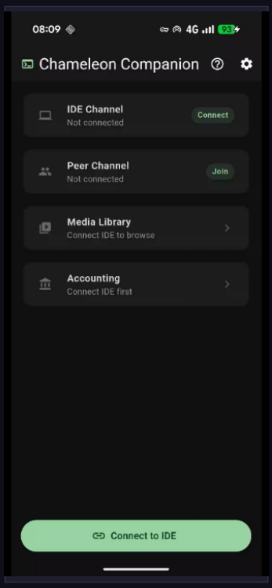
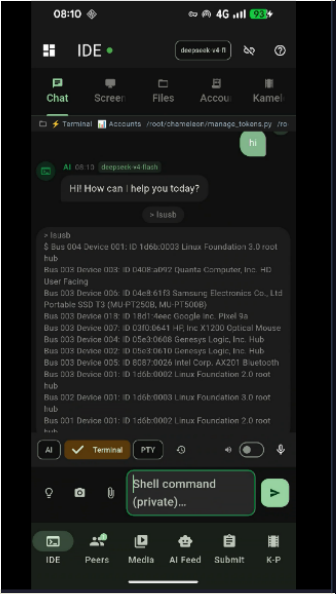
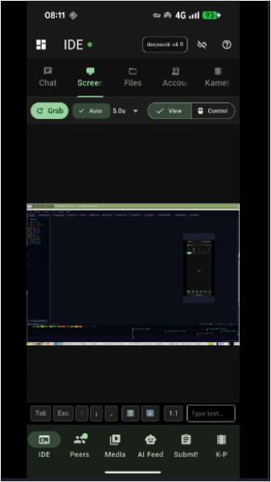
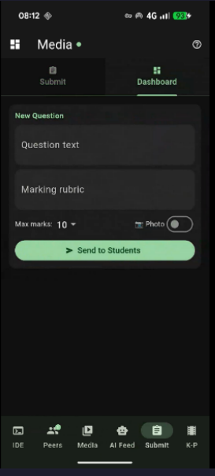
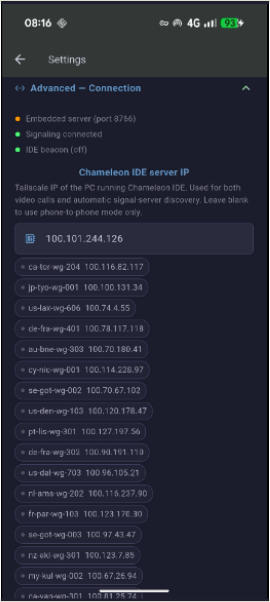
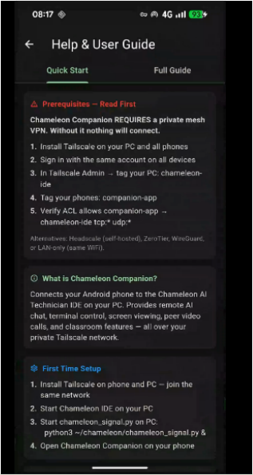

Screen 1

Screen 2

Screen 3

Screen 4

Screen 5

Screen 6

Screen 7

Screen 15

Screen 16
Telefonul dvs. Android devine o punte cu mai multe canale către desktop - relau de chat AI, video P2P de grup pentru peste 4 participanți, conectare a apelurilor SIM, control de la distanță, acces la fișiere, streaming media și contabilitate - peste tot în rețeaua dvs. privată Tailscale.
Un pod WebSocket, cinci benzi de comunicație independente
Fiecare canal este independent - utilizați unul sau toate simultan
Punte bidirecțională completă către AI desktop. Trimiteți solicitări de pe telefon, primiți răspunsuri transmise în flux. AI poate citi fișiere, rula comenzi de terminal și poate aplica editări de cod - toate declanșate din buzunar. Atașați capturi de ecran sau fotografii direct din camera foto ca context.
Video și audio WebRTC cu rețea completă pentru grupuri de 4 sau mai multe — fără server media central, fără factură lunară. Robinet Video de grup pentru a suna toți colegii online simultan. Grila se adaptează automat pe măsură ce participanții se alătură: 1 = ecran complet, 2 = unul lângă altul, 3 = 2+1, 4 = 2×2, 5+ = grilă de potrivire automată derulabilă. Fluxul dvs. local plutește ca imagine în imagine. Rata de biți scade pe egal pentru a menține calitatea echilibrată la orice dimensiune a grupului.
Sunteți deja la un apel mobil și doriți să aduceți un peer P2P? Robinet Adăugați la grupul de apeluri — aplicația înregistrează apelul WebRTC cu stiva de telecomunicații Android alături de apelul SIM. Android prezintă o opțiune nativă „Merge calls”; acceptând-o, mixarea audio este transmisă hardware-ului de telefonie. Apelul îmbinat este redat în numai cască — complet privat, fără difuzor, nimeni din cameră nu aude. Atunci când conferința hardware nu este acceptată de operator, o punte cu căști Bluetooth direcționează tot sunetul prin legătura BT SCO.
Controlați întreaga etapă Kameleon de pe telefon. Avansează diapozitive, declanșează indicații, împinge imagini sau text direct într-o stivă de scenă, aprobă sau respinge trimiterile de la colegi și controlează tabloul de desen colaborativ - totul fără a atinge tastatura desktopului.
Vizualizați și interacționați cu ecranul desktopului de pe telefon. Implementat ca un flux ușor de captură de ecran pe rețeaua Tailscale - nu este necesar un server VNC terță parte. Atingeți pentru a da clic, glisați pentru a derula. Util pentru monitorizarea proceselor care rulează sau pentru aprobarea acțiunilor AI de la distanță.
Răsfoiți sistemul de fișiere desktop de pe telefon. Deschideți, citiți și editați fișiere text. Încărcați fișiere de pe camera sau de stocare a telefonului direct într-un folder de proiect. Solicitați IDE AI să proceseze fișierul încărcat imediat după transfer - de ex. „adăugați această imagine în stadiul de prezentator”.
Transmiteți în flux muzică și videoclipuri de pe un server NAS sau DLNA din rețeaua dvs. de acasă la telefon prin Tailscale. Răsfoiți biblioteca media, puneți în coadă melodiile și controlați redarea — desktopul acționează ca o punte între serverul dvs. media local și telefon oriunde vă aflați pe tailnet.
Fotografiați o chitanță pe telefon și trimiteți-o direct la modulul de contabilitate. IDE AI citește imaginea, extrage suma, data, furnizorul și TVA-ul și înregistrează o intrare de jurnal nefinalizată în registrul cu intrare dublă - gata pentru a fi examinată și postată pe desktop.
Vorbiți cu IDE AI de pe telefon folosind conversia vorbirii în text de pe dispozitiv. Răspunsul AI este transmis înapoi și citit cu voce tare prin text-to-speech. Asistență pentru codare fără mâini în timp ce desktopul rulează nesupravegheat — dictați o remediere, ascultați rezultatul, confirmați de pe telefon.
Toate canalele rulează prin rețeaua privată Tailscale. Niciun port nu este deschis pentru internetul public. Telefonul trebuie să fie autorizat pe tailnetul dvs. - totul este criptat end-to-end cu WireGuard.
Desktopul rulează chameleon_mobile_bridge.py ca un fir de demon în interiorul procesului Qt. Aplicația pentru telefon se conectează la portul 8770 pe IP-ul Tailscale. O conexiune persistentă transportă toate canalele ca mesaje JSON tastate.
Serverul de semnal (chameleon_signal.py) poate rula direct pe telefonul Android prin Termux - făcând telefonul atât un client, cât și un nod de semnalizare. Nu este nevoie de cloud relay pentru conexiunile peer WebRTC din rețeaua ta de acces.
Când Tailscale nu este disponibil, lan_video.py transmite în flux video prin UDP (portul 47732) și audio prin UDP (portul 47733) direct în rețeaua locală - aceleași canale, fără overhead VPN.
Chameleon Companion — captured live on device






Momentan în testare — contactați-ne pentru a vă înregistra interes sau pentru a solicita o demonstrație.
Luați legătura ← Înapoi la prezentare generală